ARYCT Newsletter — September 2026
Kitchen Party, Bingo & Your "Long Range Plans"
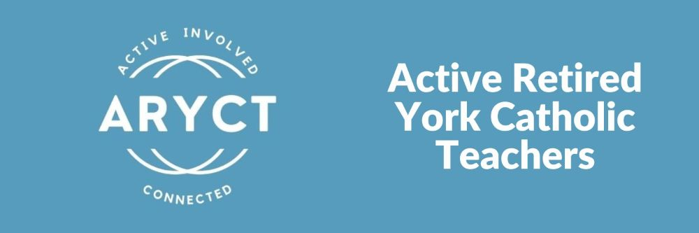
A special welcome to all newly retired YCDSB employees!
While retirement can come with a new sense of freedom, it often also comes with a new set of roles: caring for parents, downsizing, babysitting grandchildren. Whatever life is bringing your way, please consider joining fellow ARYCT members whenever you can.
Come to one event or come to all. Do what fits your schedule!
YCDSB Alumni Announcements
If you are interested in accessing the YCDSB Birth, Retirement and Bereavement Notices, click the following link:
sites.google.com/ycdsbk12.ca/ycdsbalumni →
You will be asked to register on your first visit to this site.
Thank You — Back to School & Cycle of Care Drive
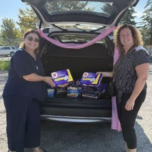
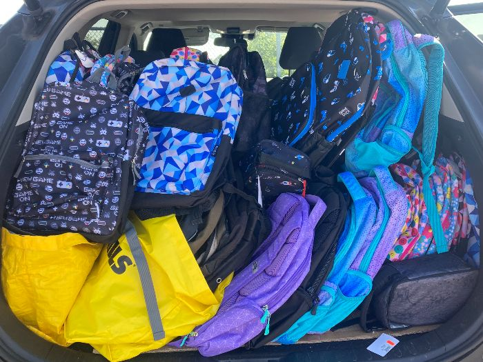
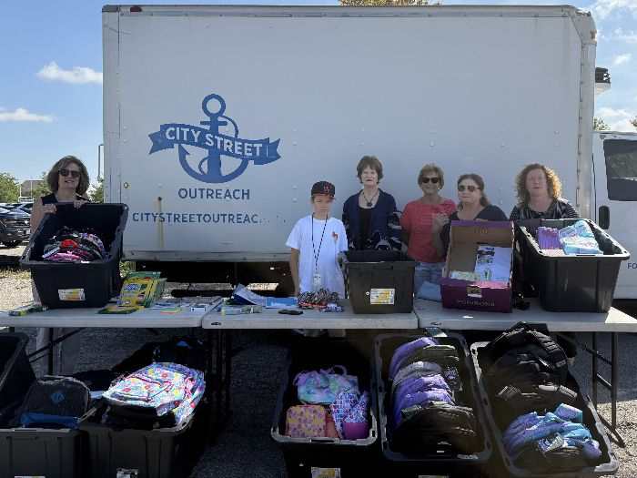
Thank you to all of our supporters of the Back to School and Cycle of Care Drive. City Street Outreach was very pleased with the donations.
For those members who sent e-transfers, proof of purchase will be emailed to you shortly.
September's Main Event: Lunch and Bingo
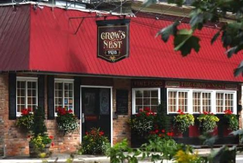
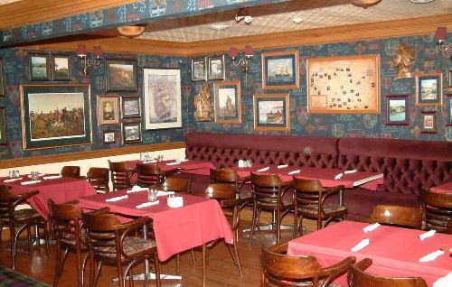
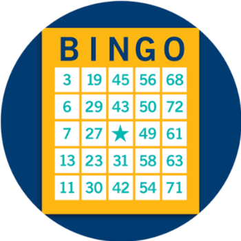
Crow's Nest Upper Room
115 Prospect St., Newmarket
Monday, September 28 — noon onward
Cost: $30.00 — includes food from preordered platters (sliders, flatbread, fruit, veggies), tea/coffee, and Bingo cards for several games. Guests will be required to order and pay for their own drinks.
Registration is limited to 50 guests. RSVP with an e-transfer to retiredteachersaryct@gmail.com.
RSVP deadline: September 18.
Please note: the event is upstairs with no elevator access, sorry. Parking is limited — car pooling is strongly advised.
Harbour of Hope — An East Coast Shindig for Mental Health
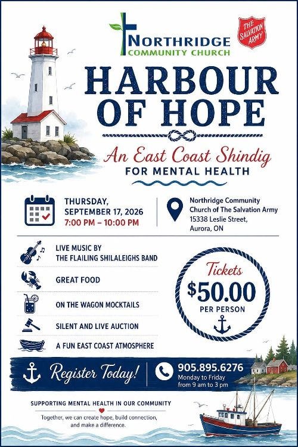
Thursday, September 17, 2026, 7:00 – 10:00 p.m.
Northridge Community Church of The Salvation Army
15338 Leslie Street, Aurora, ON
Live music by The Flailing Shilaleighs Band, great food, on-the-wagon mocktails, a silent and live auction, and a fun East Coast atmosphere. Tickets are $50.00 per person.
Come join us for an evening of fun for a great cause. Register by calling 905-895-6276, Monday to Friday from 9 a.m. to 3 p.m. Mention that you are an ARYCT member when you call for your ticket.
Indigenous Awareness — Part 2
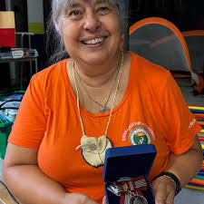
Lasky Hall, King City
Wednesday, October 28 — 10:00 a.m. to 2:00 p.m.
Facilitators: Mim Harder and Shannon Ulgiati. The morning session will concentrate on the "Blanket Exercise" as requested by last year's members, with the afternoon session offering reflection and discussion.
Cost is yet to be determined (perhaps $40 or $50), but we would like to hear from those who plan on attending. You are most welcome to bring along friends outside of our YCDSB group. Lunch will also be included.
Season of Creation — Sept. 1 to Oct. 4
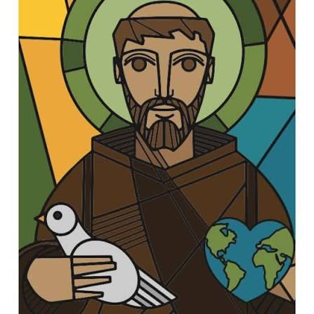
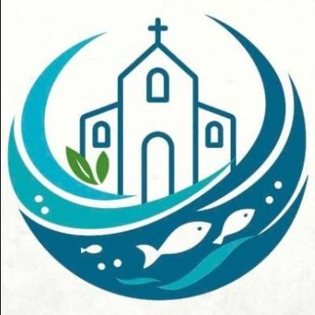
The Season of Creation is the annual ecumenical celebration of prayer and action to protect the environment and care for our common home. Held globally from September 1 to October 4, Christians unite during this period to reconnect with the Creator through reflection, sustainability projects, and advocacy.
A few events reflecting on our connection with nature — email us directly if you would like further details:
- Sept. 3Novalis Webinar: Discovering God Through Science
- Sept. 8, 22 & Oct. 6Passionist Virtual Book Club: Is a River Alive?
- Sept. 9Seniors for Climate: Climate Conversations Matter
- Sept. 12St. Gabriel's retreat with Michael Nasello
- Sept. 16Together for Nature
From Mim Harder — Together for Nature
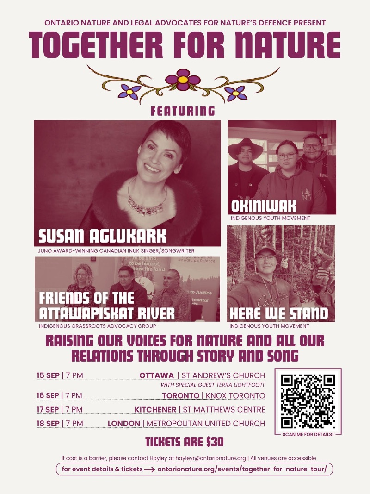
Mim has asked us to share this notice with our friend groups.
Together for Nature (Toronto)
Wednesday, September 16 — 7:00 to 9:30 p.m.
Knox Presbyterian Church, 630 Spadina Ave., Toronto
Raising our voices for nature and all our relations through story and song, featuring Susan Aglukark and Indigenous advocacy groups. Tickets are $30.
Milk Bag Weavers Are Moving to a New Day!

Due to ongoing construction at Our Lady Queen of the World church, we are moving our weaving day to Monday. Fall dates are as follows:
- Mon. Sept. 149:30 – 11:00
- Mon. Oct. 59:30 – 11:00
- Mon. Nov. 169:30 – 11:00 (moved due to parish craft show)
- Mon. Dec. 79:30 – 11:00
Winter dates will be on "first" Monday afternoons.
A New Kind of Long Range Plans!
- Mon. Sept. 14Milk Bag Weaving
- Wed. Sept. 16Together for Nature — Knox Church, Toronto
- Thurs. Sept. 17Harbour of Hope East Coast Shindig — Northridge Community Church, Aurora
- Fri. Sept. 18RSVP deadline for Lunch and Bingo
- Mon. Sept. 28To Heck with the Bell Event... Lunch and Bingo at Crow's Nest, Newmarket
- Mon. Oct. 5Milk Bag Weaving
- Thurs. Oct. 15Lunch and Presentation hosted by OTIP — OECTA York Unit Office
- Wed. Oct. 28Indigenous Awareness, Blanket Exercise — Lasky Hall, King City
- Mon. Nov. 16Milk Bag Weaving
- Wed. Dec. 2Christmas Fundraising Luncheon — Stonehaven, Newmarket
- Sun. Dec. 6Creating a Christmas Centre Piece — Lasky Hall, King City
- Mon. Dec. 7Milk Bag Weaving
- Mon. Jan. 4Milk Bag Weaving
- Mon. Feb. 1Milk Bag Weaving
- Feb. TBDLunch at Mandarin, Vaughan
- Mon. Mar. 1Milk Bag Weaving
- Mar. 9 or 10 TBDIrish Pub, Market Brewery, Newmarket
- Mon. Apr. 5Milk Bag Weaving
- Wed. Apr. 28Days of Mourning Recognition
- Mon. May 3Milk Bag Weaving; Jeans and Jewels Fundraiser
- Mon. June 7Milk Bag Weaving and Pot Luck Lunch; OECTA Retirement & 25 Year Celebration
Good to Know: Why Privacy Awareness Matters More Than Ever
Our daily lives are becoming increasingly digital. Life has never been more convenient, yet our exposure to privacy risks has never been greater. Each new app, account, or connected device is another doorway where information can slip through the cracks or fall into the wrong hands. Privacy awareness is about knowing how your personal data is collected, where it lives, and what you can do to keep it safe.